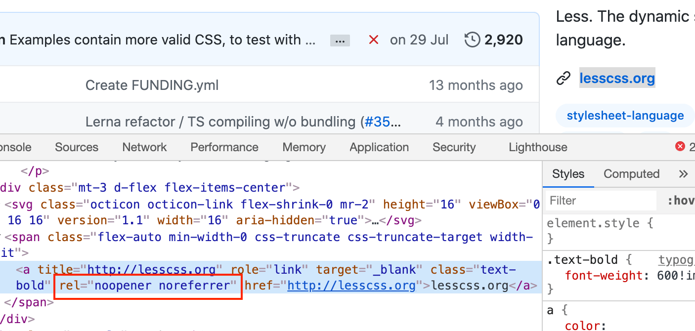
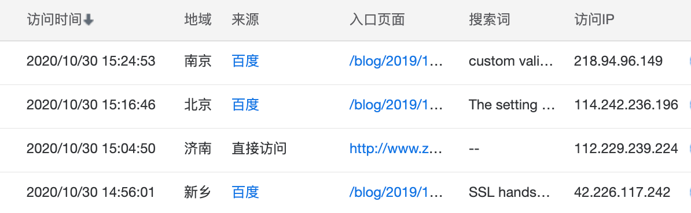

外部链接 a 标签为什么要加 noreferrer 与 noopener ？
这篇文章发布于 2020/12/15，归类于 http与https
标签：
noreferrer和noopener，noreferrer，noopener
一般页面的外部链接 a 标签都会加上 ref="noreferrer noopener"，这样可以避免一些安全问题，下面通过几个问题来具体看看
- a 标签加上 noreferrer 和 noopener 后会有什么效果？
- Referer 是什么？有什么应用场景?
- window.opener 可以做什么？

a 标签加上 noreferrer 和 noopener 后会有什么效果？
以 Github 上 less.js 仓库设置的网站链接为例，如上图。加了这两个参数后点击链接，该页面打开后
- 请求头（Request Headers）部分的 Referer 和直接访问的 Referer 一致，都为空，不会携带来源信息。
- window.opener 和直接访问该网站一致，无法获取来源网站信息，无法操作来源网站的跳转等
请求头 Referer 的作用是什么？
一般网页在加载html、js、css、图片等静态资源发送请求时，请求头部分会有一个 Referer 字段，用于标记请求来源。referer 单词存在拼写错误，本意是打算使用 referrer，写错了。后来为了兼容，将错就错，还是保留了错误的拼写方式。
Referer可以标记请求来源，有以下几个应用场景
- 用于统计分析中页面来源，可以知道用户是从哪种方式进入网站的。搜索引擎一般不会开启 noreferrer，比如百度统计可以知道你是通过哪个关键字进入的页面。

用于防盗链，防止网页静态资源被其他站点直接引用，如淘宝店铺图片、CDN图片链接、文件、视频链接等。一般会设置 referer 白名单，仅允许白名单内的 Referer 访问，否则禁止访问。减少服务器负载或不必要的 CDN 流量花费。
用于鉴权，比如页面在集成评论系统、Google AdSense等第三方功能时，会校验站点与ID是否匹配，如果不匹配会提示 403。防止其他网站引入对应的代码后，导致数据错乱。我们在处理接口请求时，也可以对 Referer 值进行判断，禁止某些来源访问接口。
window.opener 可以做什么？
window.opener 可以拿到来源网站的 window 对象，虽然一般访问 dom 等有跨域限制，但 window.opener.location.href 可以直接重定向源网站，使来源站点发生变化。使用 noopener 可以避免一些安全风险。
参考：